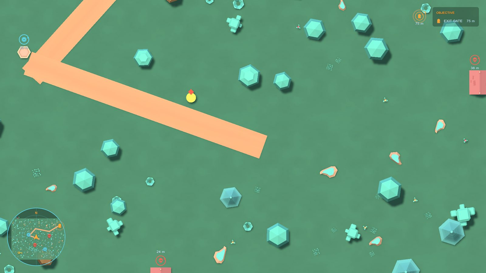

2D and top-down games
Set the HUD's Plane to XY. The Setup Wizard does this for you when the camera is a 2D (orthographic, facing forward) camera.


- Markers and edge arrows work the same as in 3D.
- The radar matches the screen: up on the radar is up on screen. The player arrow shows where the player faces (its transform's up).
- The compass bar is usually not wanted in 2D; switch it off on the HUD.
- A Waypoint Map with Plane XY bakes the level seen from the camera's side.
- Put markers where you want them with Mark Above Object off and an Offset (for example 1.4 up).
The Top-Down 2D demo shows all of this.